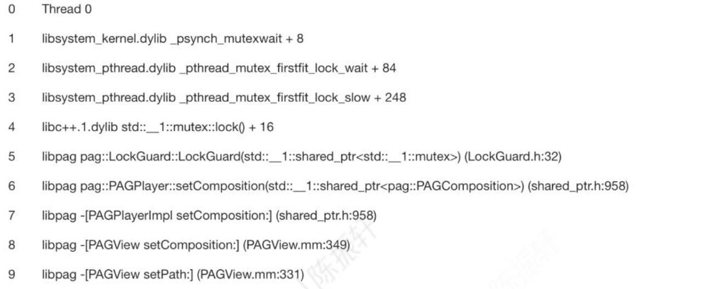
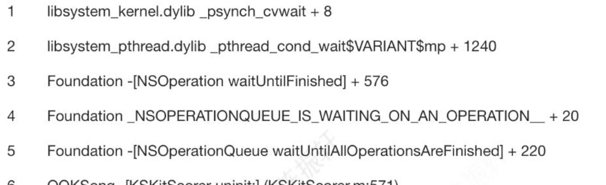
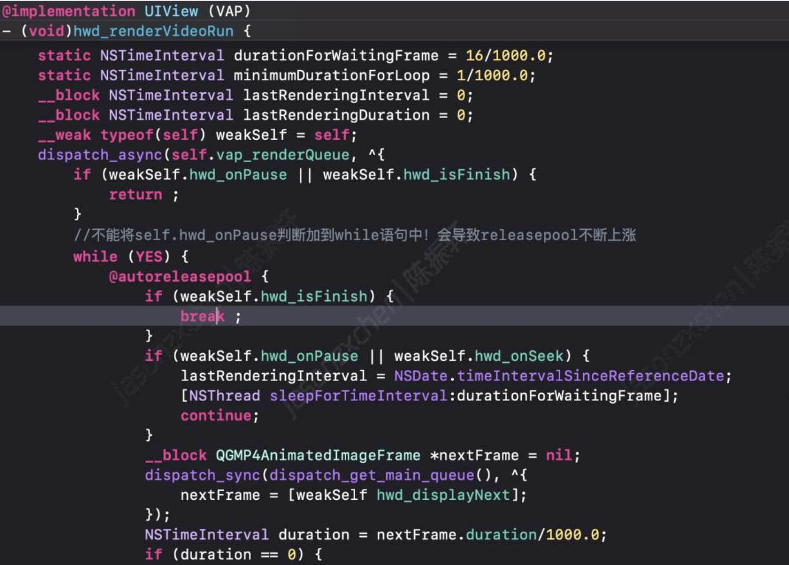
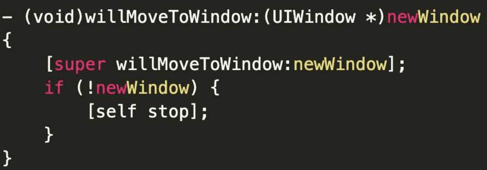
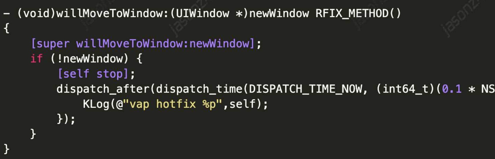
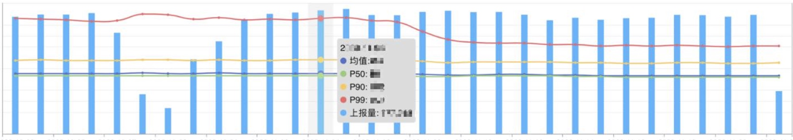
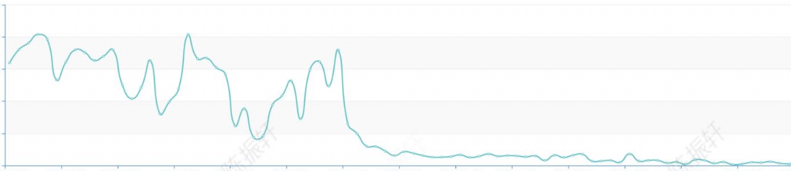
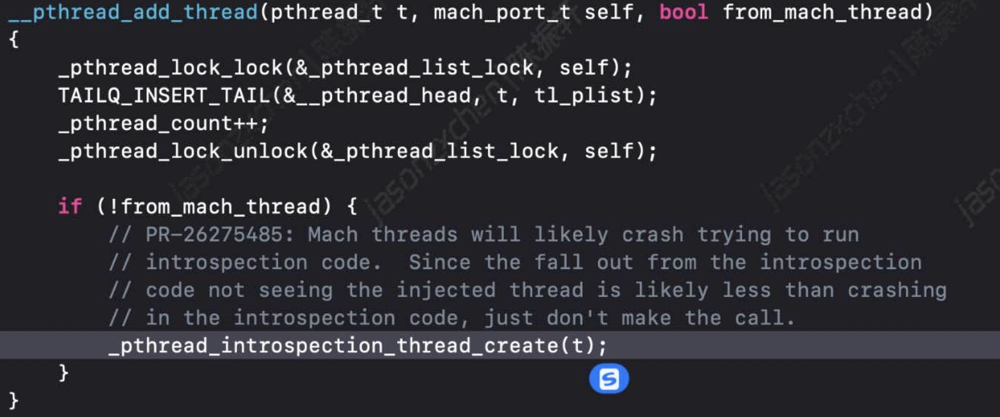

你是否遇到过这样的case。
问题
卡慢问题错综复杂，比如我们之前解决的MIDI组件的CPU繁忙导致卡死问题。因此在排查问题时也特别关注CPU消耗指标。果不其然，我们又排查到一些场景，CPU消耗高非常影响性能，原因是Hippy页的一些动画在退出场景后并未释放资源，VAP动画一直播放。看上去是业务的问题，于是由业务来优化。
卡顿卡死问题，在这样一轮优化后，也有了不错的优化效果，卡慢相关的反馈量开始减少。但也还有多个不同聚类堆栈的问题依然突出。
来看下面一些聚类的堆栈信息，这里问题有聚类堆栈，同时有个别用户反馈频繁卡死，但问题非常难重现。
二三方库libpag卡死堆栈：

打分器卡死堆栈：

你可以想象到这其实是一个问题导致的不同堆栈聚类吗？
因为堆栈分别聚类到二三方库或特定功能组件代码中，我们第一时间怀疑是否某些相关的功能组件有性能问题，因此还联合了多个团队开发来协助排查。
但组件的开发也表示头大。尽管问题堆栈明确，但原因却并未查明，单点问题开发只能尝试优化。
全线程堆栈
问题的解决得益于上报到性能平台的全线程堆栈能力。
我们在梳理排查用户反馈问题时，留意到一个反馈案例。在排查该用户线程死锁问题时，发现该用户居然有超过500多个VAP线程，远超应用的平均线程数。同时超多数量相同的线程，让人怀疑VAP组件是否存在异常使用线程的问题。
在场景内很快复现了VAP线程泄漏，正是文章开头我们遇到过的VAP动画问题：游戏大厅的Hippy页，每次进入都有2、3个VAP动画循环播放，并且退出场景并未主动调用stopHWDMP4退出方法。而当我们尝试修复stopHWDMP4问题时，又发现就算主动stop了该VAP还是线程依然未被释放。
继续排查发现:
1、App内的VAP组件，是一个魔改版的，渲染循环里引用的是weakself，退出条件里当weakself为nil时就会触发线程泄露；而外网开源版引用的是self，反而没有这样的问题；
2、存在时序问题，stopHWDMP4 后(hwd_isFinish才会置为YES)，UIView实例还必须继续存活、直到renderQueue中渲染循环退出;

也就是说VAP组件问题并不只是业务漏掉stopHWDMP4的调用才有问题，因为时序问题全站使用VAP动画轮播的场景都可能有问题 (只要是没stop或者stop后视图立刻销毁)。考虑到VAP动画在App内广泛使用，因此还需要线上修复该问题。
修复方案
如何修复呢？其实最终线上修复方案比较巧妙。
正常而言，业务一般在退出场景或需要时主动停止动画。但我们不可能hook所有业务来处理该问题——改动风险大并且逻辑分散，万一修复代码异常问题将变得更加复杂。
可以留意到VAP组件开启一个动画(以及渲染线程)是基于每一个UIView视图实例的（这也正是这里线程泄漏严重之处）。这让我们想到，统一hook视图UIView的生命周期方法（比如移除界面时），在合适的时机来解决stopHWDMP4的问题。

同时，时序问题主要是因为视图销毁的时机不可控。我们首先考虑了能否hook视图的dealoc方法，让其延迟释放？可以，但有一些风险，毕竟dealloc方法苹果是不给hook的（selector都没有）。尽管可以hook，但有没其他风险更小的方案呢？于是基于延迟释放的想法，我们进而得到了一个更简单的方案，stop之后通过闭包持有视图实例延迟了0.1s释放。

最终问题得到解决。全站的线程数P99大幅下降：

上文提到的多个聚类堆栈的卡死上报也随之消失。整站的卡死以及高CPU导致Watchdog问题大幅下降（20+%），整站性能得到有效改善。

其他探讨
问题解决了，但是VAP线程泄漏是怎么引起卡死的?VAP线程泄漏的线程上限是300、400还是多少?
首先VAP渲染循环因为缺陷无法退出，导致分配给dispatch_queue的线程一直繁忙。libdispatch底层维护线程池，在不断收到线程资源申请时，由于已分配的线程尚未完成任务，只能重新申请线程资源。回头看几个卡死的堆栈，看似都无相关，实际上是线程资源消耗导致线程调度出现异常，主线程的阻塞性API调用最终导致了卡死。
libdispatch底层维护了主队列、全局并发队列以及自定义串行/并发队列。dispatch async将一个block派发到libdispatch之后，流程其实比较冗长。libdispatch对线程资源的申请最终还是经由pthread以及xnu系统调用。

最后我们通过查证及验证，目前发现dispatch能申请的线程数最大是512个，这个跟我们火眼上报问题的线程情况还是比较吻合的。
Comments